Termoquímica: Consumo, Combustíveis e Meios Alternativos
Separado em tópicos:
O que é Termoquímica?
Combustíveis
Os Combustíveis se dividem em:
- Renováveis:
- Sólidos: Madeira/Lenha, Carvão(de origem vegetal) e Biomassa;
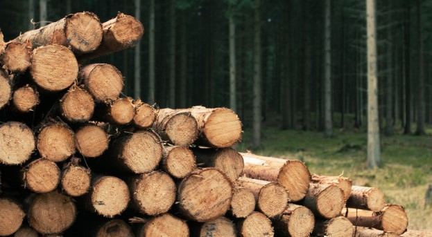
- Líquidos: Biodiesel, Etanol(álcool) e Óleo Vegetal;
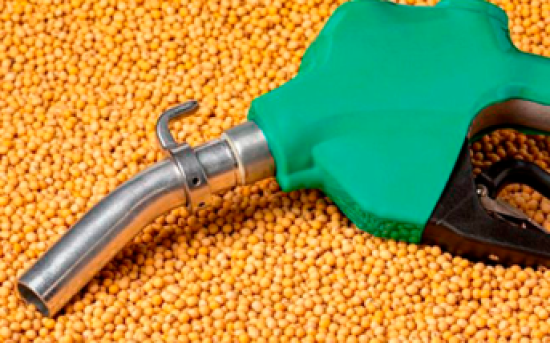
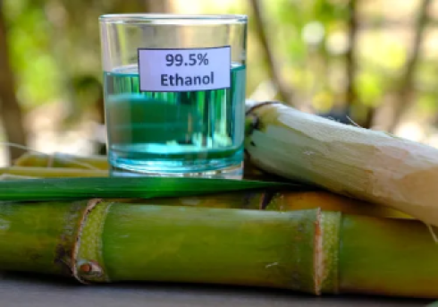
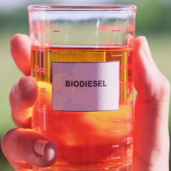
- Gasosos: Biogás e Gás Hidrogênio.
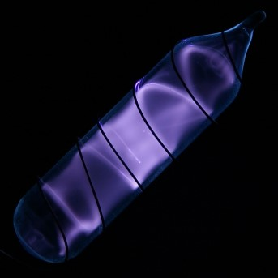
- Não renováveis:
- Sólidos:Carvão(de origem mineral), Urânio, Plutônio e Outros Combustíveis Nucleares;
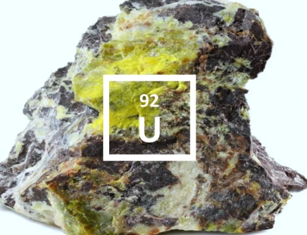
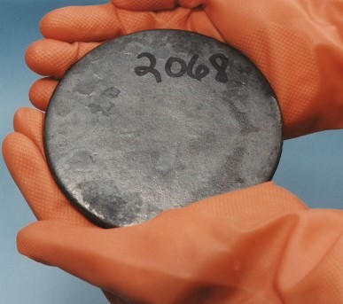
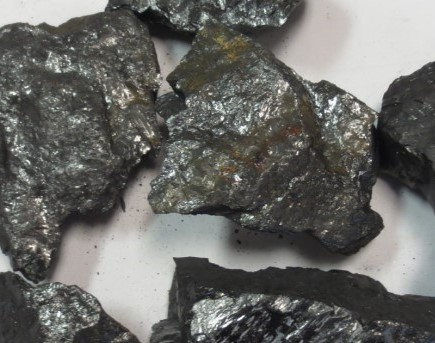
- Líquidos: Gasolina, Diesel, Querosene(de aviação) e Nafta Petroquímica;
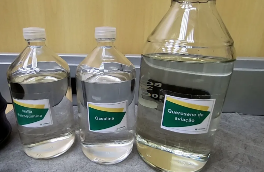
- Gasosos: GLP(Gás Liquifeito do petróleo/Gás de cozinha), Gás Natural e GNV(Gás Natural Veicular).
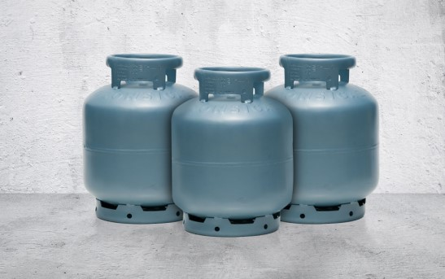
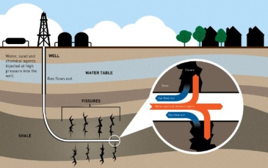
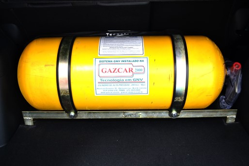
Consumo de Combustíveis
O consumo de combustíveis se dá pela sua capacidade de gerar energia através da combustão ou de reações como fissão, sendo assim uma fonte de combustível
é utilizada por; usinas para gerar eletricidade como é o caso das usinas termoelétricas que comumente usam carvão mineral ou
as usinas nucleares que utilizam Urânio ou outros combustíveis nucleares; ou por automóveis que queimam gasolina, etanol ou diesel
para assim conseguirem se movimentar.
Fontes e Refêrencias
Ajuda com HTML/CSS